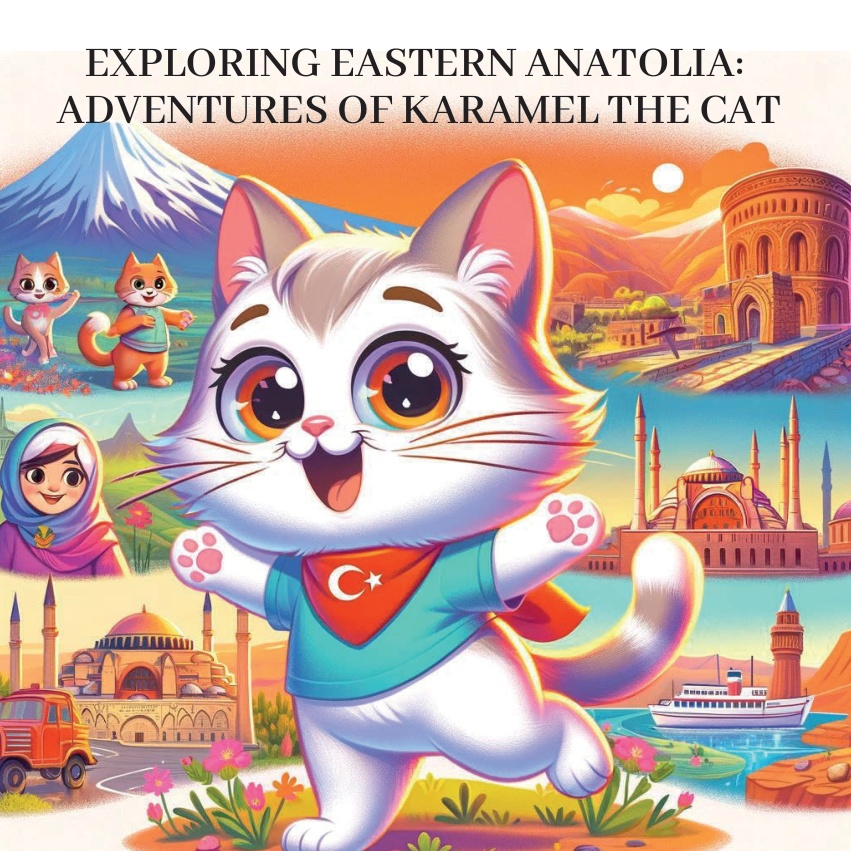
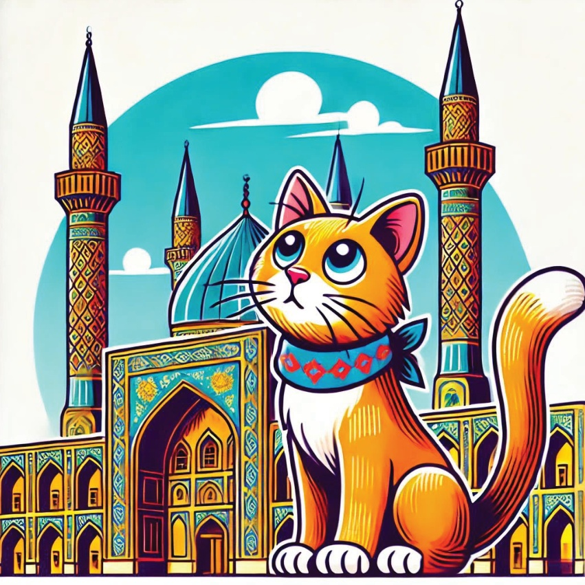
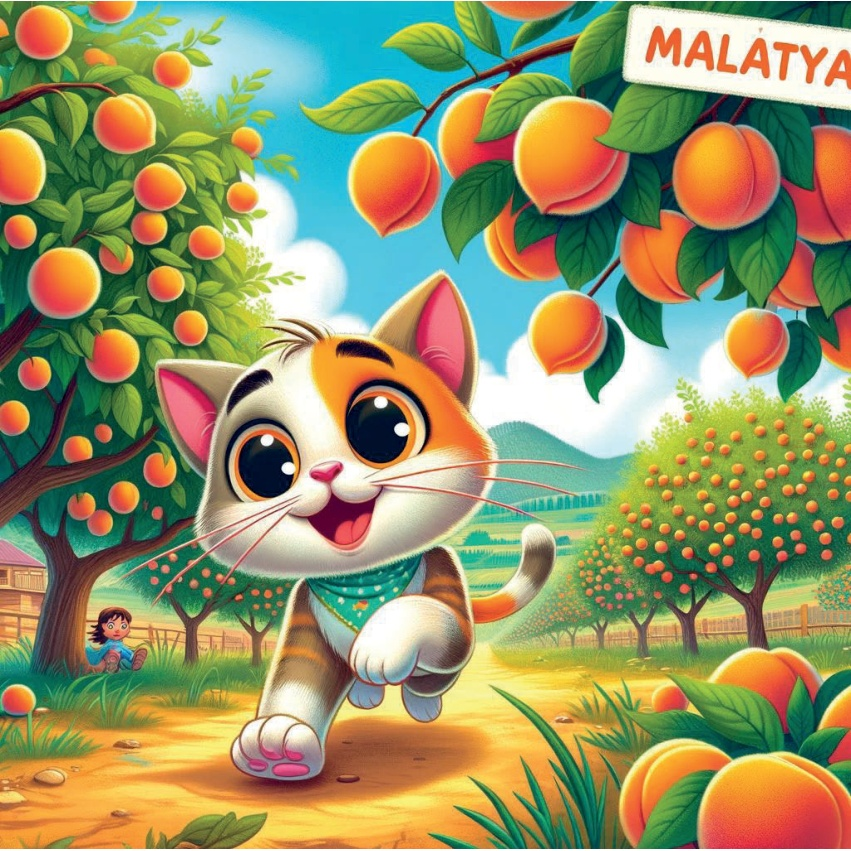
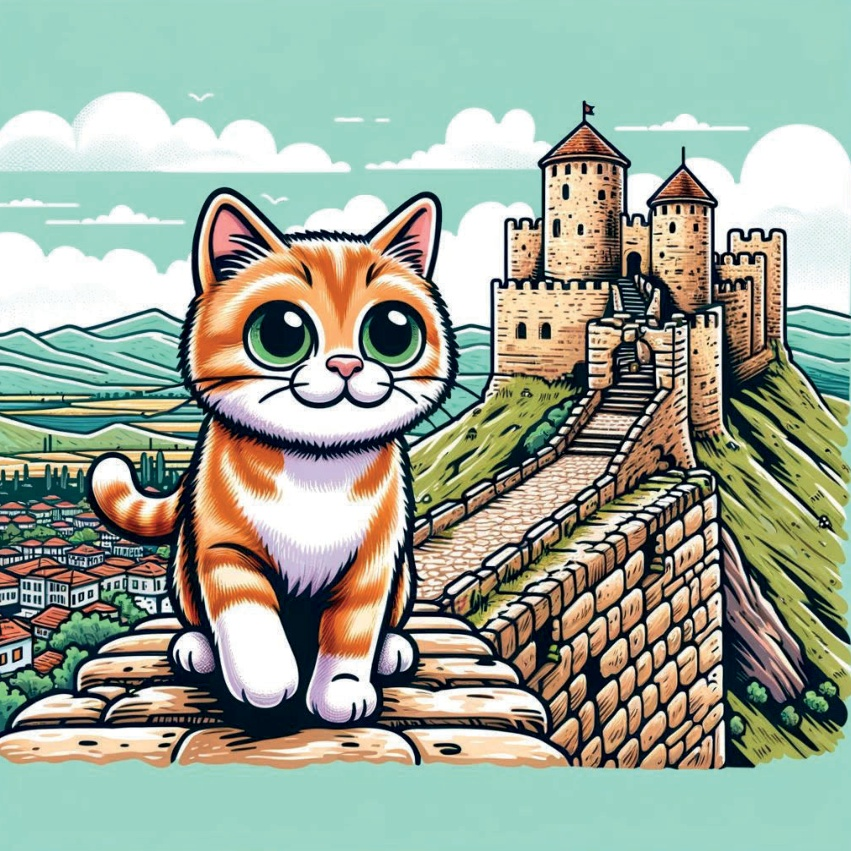
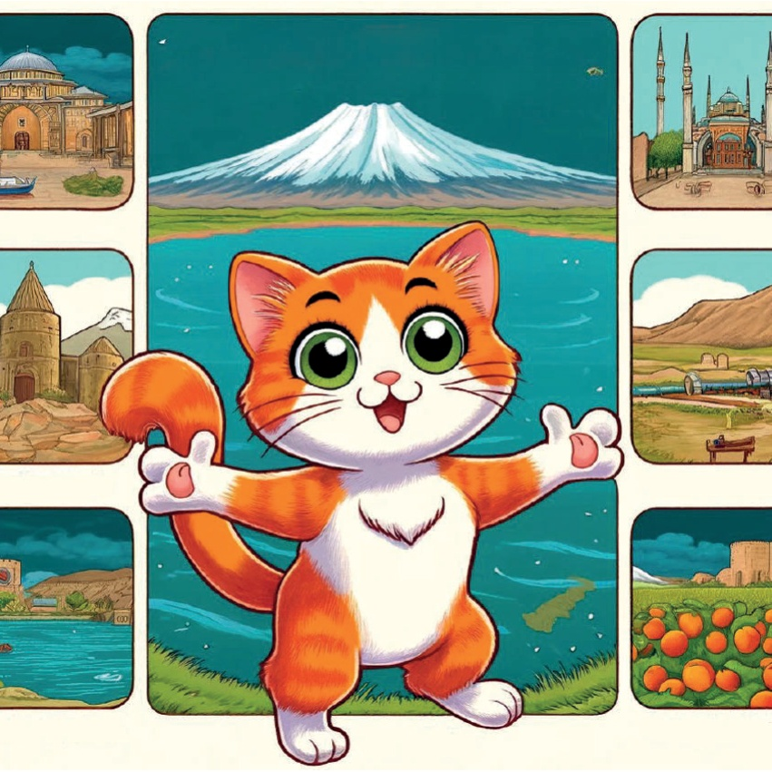

1

2

3
从前，有一只名叫卡拉梅尔的好奇的小猫，她喜欢探索不同的地区。有一天，她决定穿越土耳其东安纳托利亚地区，去了解那里独特的文化、历史和自然美景。
4
5
范：
范湖
卡拉梅尔的第一个目的地是范，
她在那里欣赏了范湖的美景。
清澈见底的水和
雄伟的山脉作为背景，
使其成为放松的完美场所。
6
7
埃尔津期：
双塔清真寺
接下来，卡拉梅尔前往埃尔津期，
在那里她探索了历史悠久的
双塔清真寺。
令人印象深刻的建筑
和精美的设计让她着迷。
8

9
阿ğrı：
阿ğrı山
在阿ğrı，卡拉梅尔看到了雄伟的
阿ğrı山。
覆盖着白雪的耸立的山峰，那是一片令人叹为观止的景象。
10
11
卡尔斯：
阿尼遗址
卡拉梅尔随后前往卡尔斯，
在那里参观了古老的阿尼遗址。
这个历史遗址，拥有古老的教堂和城墙，讲述着一个已逝时代的往事。
12
13
马拉蒂亚：
杏园
在马拉蒂亚，卡拉梅尔发现了著名的杏园。
树上挂满成熟杏子的景象和香味令人愉悦。
14

15
埃拉兹伊格：
哈普特城堡
卡拉梅尔的下一个目的地是埃拉兹伊格，
她在那里探索了古老的哈普特城堡。
城堡的历史意义和从城堡墙壁上看到的全景令人印象深刻。
16

17
土尔其里：
门祖尔河谷国家公园
在土尔其里的土恩杰利，卡拉梅尔徒步穿越门祖尔河谷国家公园。
茂盛的绿植、蜿蜒的河流和多样的野生动物使其成为一个完美的冒险之地。
18
19
心中充满了新奇的经历和回忆，卡拉梅尔意识到东部安纳托利亚地区是多么的多元化和迷人。她回到了家，梦想着她的下一次冒险。
20

21
22